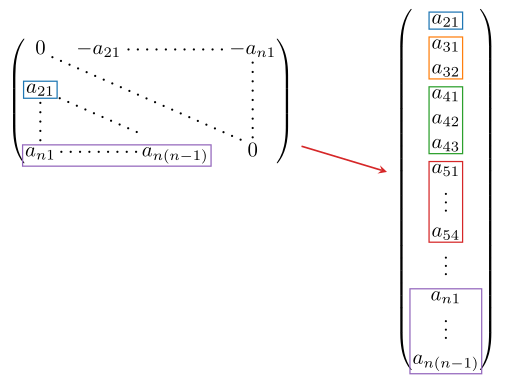

Symmetric, Skew-Symmetric and Triangular Matrices
Among the special arrays implemented in GeometricOptimizers SymmetricMatrix, SkewSymMatrix, UpperTriangular and LowerTriangular are the most common ones and similar implementations can also be found in other libraries; LinearAlgebra.jl has an implementation of a symmetric matrix called Symmetric for example. The versions of these matrices in GeometricOptimizers are however more memory efficient as they only store as many parameters as are necessary, i.e. $n(n+1)/2$ for the symmetric matrix and $n(n-1)/2$ for the other three. In addition, GeometricMachineLearning implements matrix and tensor multiplication for these matrices so that they work in parallel on GPU; see Tensors there. We here give an overview of elementary custom matrices that are implemented in GeometricOptimizers. More involved matrices are the so-called global tangent spaces.
Custom Matrices
GeometricOptimizers has two types of triangular matrices. The first one is UpperTriangular:
\[U = \begin{pmatrix} 0 & a_{12} & \cdots & a_{1n} \\ 0 & \ddots & & a_{2n} \\ \vdots & \ddots & \ddots & \vdots \\ 0 & \cdots & 0 & 0 \end{pmatrix}.\]
And the second one is LowerTriangular:
\[L = \begin{pmatrix} 0 & 0 & \cdots & 0 \\ a_{21} & \ddots & & \vdots \\ \vdots & \ddots & \ddots & \vdots \\ a_{n1} & \cdots & a_{n(n-1)} & 0 \end{pmatrix}.\]
An instance of SkewSymMatrix can be written as $A = L - L^T$ or $A = U^T - U$:
\[A = \begin{pmatrix} 0 & - a_{21} & \cdots & - a_{n1} \\ a_{21} & \ddots & & \vdots \\ \vdots & \ddots & \ddots & \vdots \\ a_{n1} & \cdots & a_{n(n-1)} & 0 \end{pmatrix}.\]
And lastly a SymmetricMatrix:
\[B = \begin{pmatrix} a_{11} & a_{21} & \cdots & a_{n1} \\ a_{21} & \ddots & & \vdots \\ \vdots & \ddots & \ddots & \vdots \\ a_{n1} & \cdots & a_{n(n-1)} & a_{nn} \end{pmatrix}.\]
Note that any matrix $M\in\mathbb{R}^{n\times{}n}$ can be written
\[M = \frac{1}{2}(M - M^T) + \frac{1}{2}(M + M^T),\]
where the first part of this matrix is skew-symmetric and the second part is symmetric. This is also how the constructors for SkewSymMatrix and SymmetricMatrix are designed. Consider an arbitrary matrix:
M = [1; 2; 3;; 4; 5; 6;; 7; 8; 9]3×3 Matrix{Int64}:
1 4 7
2 5 8
3 6 9Calling SkewSymMatrix on $M$ is equivalent to doing $M \to \frac{1}{2}(M - M^T)$:
A = SkewSymMatrix(M)3×3 SkewSymMatrix{Float64, Vector{Float64}}:
0.0 1.0 2.0
-1.0 0.0 1.0
-2.0 -1.0 0.0And calling SymmetricMatrix on $M$ is equivalent to doing $M \to \frac{1}{2}(M + M^T)$:
B = SymmetricMatrix(M)3×3 SymmetricMatrix{Float64, Vector{Float64}}:
1.0 3.0 5.0
3.0 5.0 7.0
5.0 7.0 9.0We can further confirm the identity above:
M ≈ A + BtrueNote that for LowerTriangular and UpperTriangular no projection step is involved, which means that if we start with a matrix of type AbstractMatrix{Int64} we will end up with a matrix that is also of type AbstractMatrix{Int64}. The type changes however when we call SkewSymMatrix and SymmetricMatrix:
(typeof(A) <: AbstractMatrix{Int64}, typeof(B) <: AbstractMatrix{Int64})(false, false)For the triangular matrices:
U = UpperTriangular(M)
L = LowerTriangular(M)
(typeof(U) <: AbstractMatrix{Int64}, typeof(L) <: AbstractMatrix{Int64})(true, true)How are Special Matrices Stored?
The following image demonstrates how a skew-symmetric matrix is stored in GeometricOptimizers:


So what is stored internally is a vector of size $n(n-1)/2$ for the skew-symmetric matrix and the triangular matrices, and a vector of size $n(n+1)/2$ for the symmetric matrix.
Sample Random Matrices
We can sample a random skew-symmetric matrix:
A = rand(SkewSymMatrix, 3)3×3 SkewSymMatrix{Float64, Vector{Float64}}:
0.0 -0.521214 -0.586807
0.521214 0.0 -0.890879
0.586807 0.890879 0.0and then access the vector:
A.S3-element Vector{Float64}:
0.521213795535383
0.5868067574533484
0.8908786980927811This is equivalent to sampling a vector and then assigning a matrix[1]:
S = rand(3 * (3 - 1) ÷ 2)
SkewSymMatrix(S, 3)3×3 SkewSymMatrix{Float64, Vector{Float64}}:
0.0 -0.521214 -0.586807
0.521214 0.0 -0.890879
0.586807 0.890879 0.0These special matrices are what the layers of GeometricMachineLearning are parametrized by: SympNets, the volume-preserving transformer and the linear symplectic transformer all use one or more of them. That package also batches them over the third axis of a tensor, with mat_tensor_mul and tensor_mat_mul; see Tensors there.
Why the storage matters here
Because these types keep only their free parameters, they are also what an optimizer has to be able to update — and the generic array methods cannot do it: three of the four have no setindex! for an elementwise operation to broadcast through, similar has to preserve the type rather than widen to a dense Matrix, and $n(n\pm1)/2$ numbers do not reshape back to $n \times n$. See VectorStorageMatrix for the methods that make them usable as optimizer parameters.
The same storage is what a flat parameter vector and a saved file have to hold, for the same reason: $n(n\pm1)/2$ numbers are the whole content of one of these matrices, and the $n^2$ entries of the dense interface are neither the right length nor, for three of the four types, writable at all. NeuralNetworkParameters asks a leaf type for exactly that relation, through its freeparameters/rebuild pair, and loading it alongside this package brings in an extension that answers for all three families here — these matrices, the manifolds, and the horizontal lifts. Flattening, differentiating and saving a parameter set that contains them therefore needs no case per type in the package doing the training.
Library functions
AbstractTriangular, UpperTriangular, LowerTriangular, SkewSymMatrix, SymmetricMatrix and VectorStorageMatrix. Their docstrings are on the reference page, where every docstring in the package is rendered once; the names above link to them.
- 1We fixed the seed to the same value in both these examples.